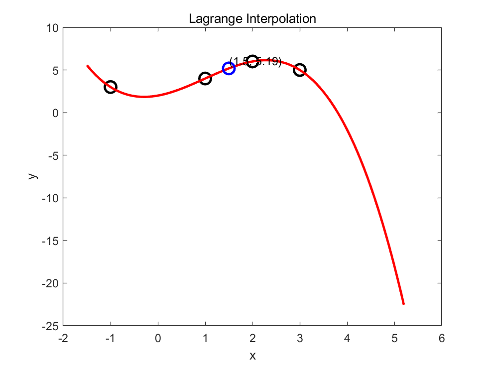
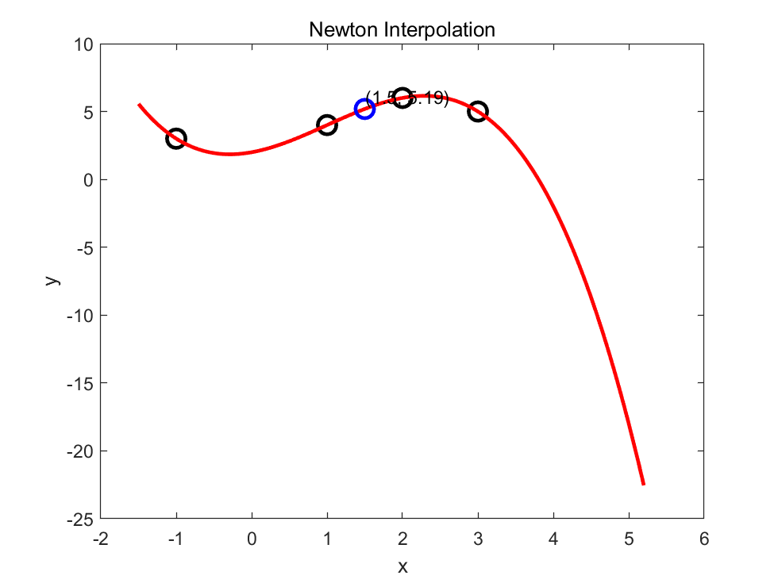
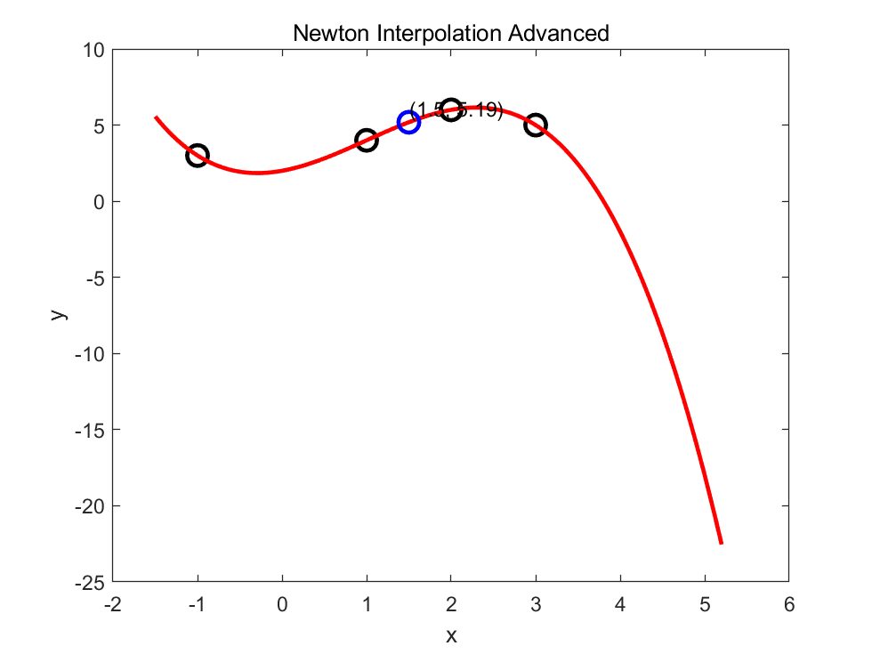

Matlab第九周插值问题（升级版）
Matlab选修作业记录（其他的简介懒得写了/2025-01-25/）
北邮Matlab选修 Week 9 插值(升级版)
插值计算
问题描述
已知如下函数表，利用牛顿插值计算 $f(1.5)$：
| $x$ | -1 | 1 | 2 | 3 |
| $f(x)$ | 3 | 4 | 6 | 5 |
程序设计
%lagrange_interp.m
function y=lagrange_interp(xdata,ydata,x)
% Lagrange 插值
% 输入参数：
% ---xdata：给定的节点横坐标
% ---ydata：给定的节点纵坐标
% ---x：需要进行插值的节点横坐标
% 输出参数：
% ---y：Lagrange 插值函数在 x 处的函数值
% =
n=length(xdata);
m=length(ydata);
if n~=m
error('插值数据长度不等！');
end
ii=1:n;
y=zeros(size(x));
for i=ii
ij=find(ii~=i);V=1;
% if sum(abs(xdata(i)-xdata(ij))<eps)>0
% error()
% end
for j=1:length(ij)
if abs(xdata(i)-xdata(ij(j)))<eps
error('输入的 n+1 个节点不是互异的。');
end
V=V.*(x-xdata(ij(j)));
end
%prod(x-xdata(ij)')
y=y+V*ydata(i)/prod(xdata(i)-xdata(ij));
end
计算结果
%question1.m
x=-1.5:0.01:5.2; % 加密数据点
xdata=[-1,1,2,3]; % 已知数据点
ydata=[3,4,6,5]; % 点 xdata 处的函数值
y=lagrange_interp(xdata,ydata,x); % Lagrange 插值
% 计算在 x = 1.5 处的预测值
x_pred = 1.5;
y_pred = lagrange_interp(xdata,ydata,x_pred);
% 绘制图形
figure; % 创建新的图形窗口
plot(xdata,ydata,'ko','MarkerSize',10,'LineWidth',2); % 绘制原始数据点，设置点的大小和线宽
hold on; % 保持当前图形，以便在同一图形上添加更多的线或点
plot(x,y,'r','LineWidth',2); % 绘制拉格朗日插值的结果，设置线的颜色和线宽
plot(x_pred,y_pred,'bo','MarkerSize',10,'LineWidth',2); % 绘制预测点，设置点的颜色、大小和线宽
text(x_pred,y_pred,sprintf('(%0.1f, %0.2f)',x_pred,y_pred),'VerticalAlignment','bottom'); % 在图上显示预测值
hold off; % 取消保持图形
% 添加标题和轴标签
title('Lagrange Interpolation');
xlabel('x');
ylabel('y');
>> question1

代码修改
问题描述
书上给的牛顿插值函数 newton 代码示例中，利用矩阵来记录差商表。但注意到，牛顿插值中实际上只用到了差商表第一行上的元素，因此，只保留第一行元素就够了，其它中间结果并不需保存。请编写一个函数，用于求该磁盘的体积和面积，并用一个实例对编写的函数进行测试。请对书上给出的 newton 代码进行修改：
- 1.将数据合规性检查挪到函数代码执行顺序的前方位置，独立于插值计算；
- 2.修改 newton 函数，用向量来表示差商表中第一行数据的存储。
完成以上代码修改后，计算作业 1 ，检验程序是否正确。
程序设计
原代码：
%newton_interp.m
function [y,D]=newton_interp(xdata,ydata,x)
% Newton 插值
% 输入参数：
% ---xdata：给定的节点横坐标
% ---ydata：给定的节点纵坐标
% ---x：需要进行插值的节点横坐标
% 输出参数：
% ---y：Newton 插值函数在 x 处的函数值
% ---D：差商表
n=length(xdata);
m=length(ydata);
if n~=m
error('插值数据长度不等！');
end
D=zeros(n);D(:,1)=ydata';H=1;
for j=1:n-1
for k=1:n-j
if abs(xdata(j+k)-xdata(k))<eps
error('输入的 n+1 个节点不是互异的。');
end
D(k,j+1)=(D(k+1,j)-D(k,j))/(xdata(j+k)-xdata(k));
end
H=H.*(x-xdata(j));
L(j,:)=H;
end
L=[ones(size(x));L];
y=L.*repmat(D(1,:)',1,length(x));
y=sum(y);
改进后的代码：
%newton_interp_advanced.m
function [y,D]=newton_interp_advanced(xdata,ydata,x)
% Newton 插值
% 输入参数：
% ---xdata：给定的节点横坐标
% ---ydata：给定的节点纵坐标
% ---x：需要进行插值的节点横坐标
% 输出参数：
% ---y：Newton 插值函数在 x 处的函数值
% ---D：差商表
n = length(xdata);
if n ~= length(ydata)
error('插值数据长度不等！');
end
for i = 1:n-1
if abs(xdata(i+1) - xdata(i)) < eps
error('输入的 n+1 个节点不是互异的。');
end
end
D = ydata;
H = 1;
L = zeros(n-1, length(x)); % 预先分配 L 的大小
for j = 1:n-1
for k = n:-1:j+1
D(k) = (D(k) - D(k-1)) / (xdata(k) - xdata(k-j));
end
H = H .* (x - xdata(j));
L(j,:) = H;
end
L=[ones(size(x));L];
y=L.*repmat(D(1,:)',1,length(x));
y=sum(y);
计算结果
%question2_newton.m
x=-1.5:0.01:5.2; % 加密数据点
xdata=[-1,1,2,3]; % 已知数据点
ydata=[3,4,6,5]; % 点 xdata 处的函数值
y=newton_interp(xdata,ydata,x); % Lagrange 插值
% 计算在 x = 1.5 处的预测值
x_pred = 1.5;
y_pred = newton_interp(xdata,ydata,x_pred);
% 绘制图形
figure; % 创建新的图形窗口
plot(xdata,ydata,'ko','MarkerSize',10,'LineWidth',2); % 绘制原始数据点，设置点的大小和线宽
hold on; % 保持当前图形，以便在同一图形上添加更多的线或点
plot(x,y,'r','LineWidth',2); % 绘制拉格朗日插值的结果，设置线的颜色和线宽
plot(x_pred,y_pred,'bo','MarkerSize',10,'LineWidth',2); % 绘制预测点，设置点的颜色、大小和线宽
text(x_pred,y_pred,sprintf('(%0.1f, %0.2f)',x_pred,y_pred),'VerticalAlignment','bottom'); % 在图上显示预测值
hold off; % 取消保持图形
% 添加标题和轴标签
title('Newton Interpolation');
xlabel('x');
ylabel('y');
%question2_newton_advanced.m
x=-1.5:0.01:5.2; % 加密数据点
xdata=[-1,1,2,3]; % 已知数据点
ydata=[ 3,4,6,5]; % 点 xdata 处的函数值
y=newton_interp_advanced(xdata,ydata,x); % Lagrange 插值
% 计算在 x = 1.5 处的预测值
x_pred = 1.5;
y_pred = newton_interp_advanced(xdata,ydata,x_pred);
% 绘制图形
figure; % 创建新的图形窗口
plot(xdata,ydata,'ko','MarkerSize',10,'LineWidth',2); % 绘制原始数据点，设置点的大小和线宽
hold on; % 保持当前图形，以便在同一图形上添加更多的线或点
plot(x,y,'r','LineWidth',2); % 绘制拉格朗日插值的结果，设置线的颜色和线宽
plot(x_pred,y_pred,'bo','MarkerSize',10,'LineWidth',2); % 绘制预测点，设置点的颜色、大小和线宽
text(x_pred,y_pred,sprintf('(%0.1f, %0.2f)',x_pred,y_pred),'VerticalAlignment','bottom'); % 在图上显示预测值
hold off; % 取消保持图形
% 添加标题和轴标签
title('Newton Interpolation Advanced');
xlabel('x');
ylabel('y');
>> question2_newton
>> question2_newton_advanced
 
最后修改于 2024-08-05